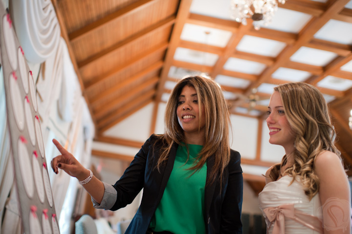
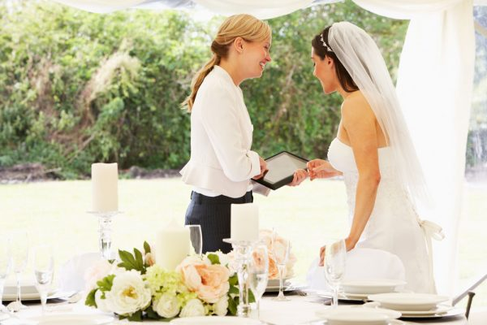

With our wedding planning packages to suit all your budget and lifestyle requirements we are able to offer a varied range of packages to help create your magical day. We are able to select and recommend venues, suppliers to reflect your dream day. From venues to flowers, cakes, wedding attire and everything you need. We work around you and your lifestlye so that you remain in full control in every stage of your planning.
We are happy too announce we organise gay weddings as well as renewal of vows. We offer a day coordination packages, as well as the planning packages.
JS Wedding Planners will work with you to create a concept for your wedding that starts from your invitations right through to your reception venue. We will locate all the special services and products required for your consideration and take care of all booking requirements. Plus you have the time saving benefit of only one person to contact for all aspects of your wedding!
Day Coordination
Congratulations on your engagement, it is certainly a time for joy and excitement and this time can also be a scary concept for those not knowing where to start or how to go about starting one of the biggest days of your lives.
With this package, it is ideal if you need a helping hand to obtain some assistance, guidance and support to get you started and on your way.
This Starter package as all our wedding planning packages are available to purchase as an Engagement gift for a friend, family member of simply for yourselves to obtain information to help you on your way.
This package includes:
Free initial consultation
3 hours of consultation
3 weeks of calls and email support (the three weeks commence at a time to suit you)
Supplier recommendation – we will provide recommended suppliers who fit your requirements and where possible have a
discount available so that it will save you money towards your wedding
If you purchase this package and need further hourly assistance then you can purchase our hourly rate as discounted prices. (Discount only available on the hourly rate with the Starter Package)
Our starter package starts from £250
Starter Package
Congratulations on your engagement, it is certainly a time for joy and excitement and this time can also be a scary concept for those not knowing where to start or how to go about starting one of the biggest days of your lives.
With this package, it is ideal if you need a helping hand to obtain some assistance, guidance and support to get you started and on your way.
This Starter package as all our wedding planning packages are available to purchase as an Engagement gift for a friend, family member of simply for yourselves to obtain information to help you on your way.
This package includes:
Free initial consultation
3 hours of consultation
3 weeks of calls and email support (the three weeks commence at a time to suit you)
Supplier recommendation – we will provide recommended suppliers who fit your requirements and where possible have a
discount available so that it will save you money towards your wedding
If you purchase this package and need further hourly assistance then you can purchase our hourly rate as discounted prices. (Discount only available on the hourly rate with the Starter Package)
Our starter package starts from £250

Small Package
Our Jasmine package has been designed for those who have their own ideas for their special day but need a little helping hand with the finishing touches and organisation.
We will start two months prior to your Wedding day. The Jasmine package includes the Initial consultation, Wedding venue Search and the following.
4 face to face meetings when required, communication via email and telephone
Produce a Timeline to run from two month prior to the big day. This will be handed out to your wedding party so they know the plan for your big day
Wedding venue supervision, ensuring the smooth set up including the table decorations, flowers and function room set up.
Be point of contact for suppliers / venue on your special day to enable you to concentrate on getting ready and enjoying your day!
Be available for you up until the wedding reception to assist if required
Our Jasmine package starts from £699
Medium Package
Our Violet package ideal for those who have started the plans of your special day but need the assistance in bringing your plans back on track.
This package is designed to put you back on track and steer in the right direction and assist in finalising your plans without any stress.
The Violet package includes the initial consultation meeting and the following.
Consultation to establish where you are with the planning stage and where you need assistance with suppliers and tasks
Produce a Timeline and distribute so that all the wedding party are aware of what and when milestones are to be met.
Assistance with budget planning
Regular communication by email and telephone
Assistance with RSVP
Itinerary for the Wedding Day provided to all the Wedding Party
Ensure Wedding Venue and reception preparations runs smoothly including visits day before the Wedding (if needed) and the morning of the Wedding
Assist with the Wedding party if required prior to your Wedding Ceremony
Discreet Co-ordination on your Wedding Day until your reception starts to ensure smooth running of your day
Our Violet Package starts from £899

Large Package
Our Lily package has been designed for those who would like to have their plans arranged for them but still having control of the finer details of what is the most magical day of your lives.
This package may suit those who don’t have family close by to help organise your special day, or have a hectic schedule with work and family and would like the guidance of a Wedding Planner to coordinate your every requirement. The Lily package includes the following:
Initial consultation to get together to build our plan of action- to hear your ideas and wishes along with any recommendations from Sprinkle of Magic to get an understanding on what is required.
Unlimited communication with meetings, telephone calls and emails.
Budget Analysis including payment schedule plan
Timeline and itinerary for the Wedding plan
Recommend venue and supplier
Wedding administration
Organising Wedding Dress / Suit shopping and attend if required
Design a style / theme with you for your wedding
Stationary – assisting in choosing, ordering, checking and sending
RSVP assistance
Set up of Church (if required)
Set up on the venue ensuring all items on the checklist are complete Including place settings, table decorations and flowers all correct
Assistance with the Wedding party on the day
Discreet co ordination on Wedding Day and reception including Co ordination until the reception is underway
Our Lily Package starts from £1700